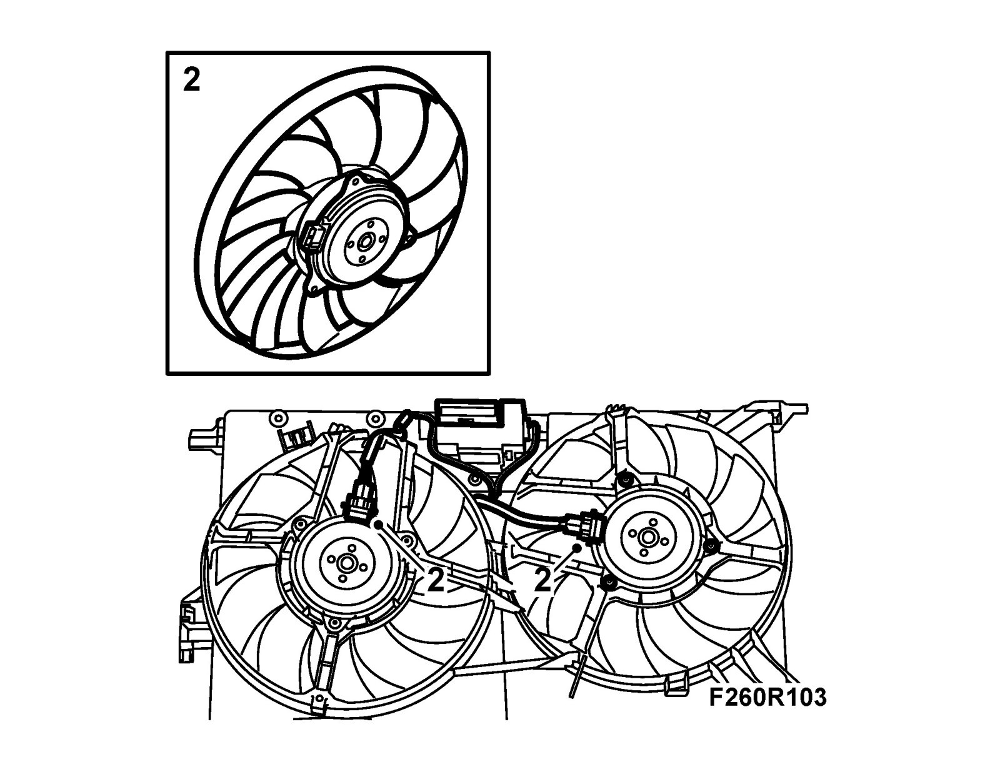

Radiator Cooling Fan: Service and Repair
Engine, cooling fanTo remove
1. Remove the fan cowling.
2. Unplug the connector and remove the fan motor.

To fit
1. Fit the new fan motor and plug in the connector.
2. Fit the fan cowling.
